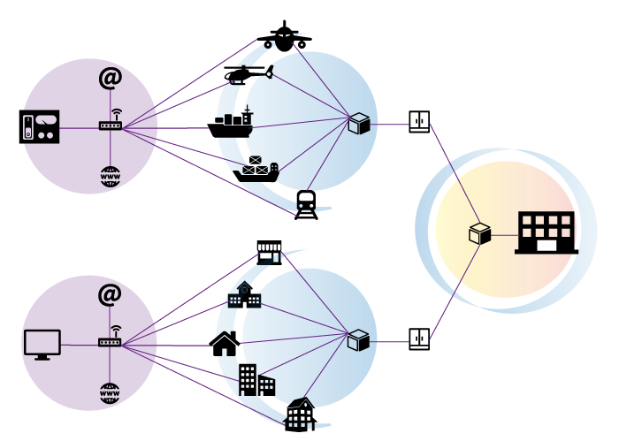

Exploración inicial del problema
Optimización de la red primaria
Ahora trabajaremos con los datos de la primera parte del problema, que corresponde a la optimización de la red de fibra óptica.

De manera muy similar a la escena anterior, a continuación
incluimos la representación gráfica correspondiente a la red de
fibra óptica con el objeto de que encuentres la solución de
costo mínimo que comunique todos los puntos. Podrás marcar y
desmarcar los enlaces al presionar sobre los puntos anaranjados
o sobre los costos en el cuadro.
En esta ocasión podrás variar entre 4 y 8 el valor de \(N\), que representa el número de puntos a conectar, con objeto de graduar la complejidad del problema mientras exploras.
En esta ocasión podrás variar entre 4 y 8 el valor de \(N\), que representa el número de puntos a conectar, con objeto de graduar la complejidad del problema mientras exploras.
Preguntas
Una vez que hayas practicado varias veces la búsqueda de la solución de costo mínimo para la red de fibra óptica, contesta las siguientes preguntas:
Una vez que hayas practicado varias veces la búsqueda de la solución de costo mínimo para la red de fibra óptica, contesta las siguientes preguntas:
- ¿Por qué, para el caso de los ocho puntos, tomar todos los enlaces de costo 1 no resuelve el problema?
- ¿Crees que comenzar con cuatro puntos e ir aumentando ayuda a la solución del problema con los ocho puntos?
- ¿Crees que comenzar con cuatro puntos e ir aumentando ayuda a encontrar un procedimiento general para solucionar este tipo de problemas?
Seguramente no tardaste mucho en encontrar una o varias de las soluciones posibles del problema. Sin embargo, el método de prueba y error no siempre da resultado de forma rápida y fácil. En la siguiente página trabajaremos este mismo problema con un cuadro de costos arbitrario, simulando la problemática que tienen quienes realizan este tipo de proyectos en el mundo real.
Avanza a la página 3 para seguir explorando, ¡sobre todo si quieres encontrar más pistas que te lleven al diseño del procedimiento general!